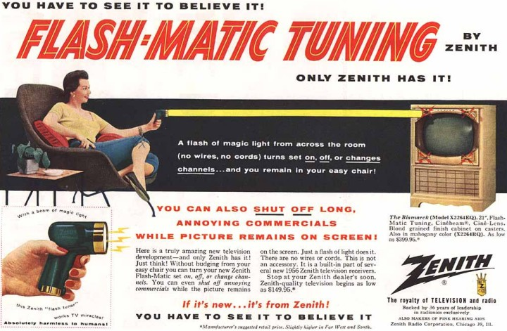

|
Selim Koca
Kalýpçýlýk Öðretmenliði Böl.
Gazi Üniv. Teknik Eð. Fak. Makine A.B.D.
Nisan 2007, Ankara
Not: Bu makale, ilk defa
Nisan 2008'de TurkCADCAM.net Portalý'nda yayýnlanmaya baþlamýþtýr.
Özet:
Ürün satýn alma sürecinde müþterilerin tercihlerinde etkili olan tasarým özelliklerinin büyük bir bölümü ergonomi bilimi ile ilgili olup, ergonomik faktörler ürünlerin dayanýmýnda, aðýrlýðýnda, üretilebilirliðinde ve kullanýþlýlýðýnda kritik bir öneme sahiptir. Kýsaca ürünlerin dayaným, aðýrlýk, üretilebilirlik (kalýplanabilirlik, imal edilebilirlik, þekillendirilebilirlik vb.), estetik, ergonomi, kullanýþlýlýk faktörlerinin hepsi tasarým kriterleri içerisinde yer almaktadýr.
Yeni ürün tasarýmý ve imalatý açýsýndan rekabetin içerisinde olabilmek için, geliþen teknoloji göz önünde bulundurularak, deðiþen kullaným yerlerine uygun, daha hýzlý, daha kaliteli ve daha ucuz maliyetli parçalar üretme zorunluluðu bulunmaktadýr. Bu makalede, bir TV uzaktan kumanda tasarýmýný etkileyen prensipler elektronik elemanlar göz önünde bulundurulmaksýzýn tasarým kriterleri çerçevesinde CAD/CAM/CAE ortamýnda iki farklý ürün üzerinde tartýþýlmaktadýr.
Giriþ:
Uzaktan kumanda üzerindeki analiz ve sentezleri anlatmadan önce uzaktan kumandadan biraz bahsetmek gerekir. Uzaktan kumandayý basitçe anlatmak gerekirse, kullanýcýnýn kontrol bilgilerini herhangi bir iletim yoluyla kumanda yüzeylerine uygulayan sistemdir.
Ýlk televizyon uzaktan kumandasý 1950'lerin ilk yarýsýnda Zenith Radyo Þirketi tarafýndan geliþtirildi. Bu uzaktan kumanda (diðer adýyla "Tembel Kemikler - Lazy Bones") televizyona bir kablo ile baðlanmýþtý;
1950 yýlýna ait kablolu, uzaktan TV kumandasýna ait bir reklam; Zenith Lazy Bones (Tembel Kemikler)
Bu aðýr uzaktan kumandayý daha kullanýþlý hale getirmek için 1955 yýlýnda "Flash-Matic" isimli, kablosuz uzaktan kumanda modeli geliþtirildi;

1955 yýlýna ait bir reklam; Zenith / Flash-Matic
(Özel bir pilli fener, ekranýn 4 köþesindeki optik alýcýlardan istenilen birine doðrultularak TV kumanda ediliyordu)
1956 yýlýnda Robert Adler, "Zenith Uzay Kumandasý - Zenith Space Command" adýyla kablosuz bir uzaktan kumanda geliþtirdi. Ultrasonik ses dalgalarýyla iletiþim tekniðini kullanan, Adler'in geliþtirmiþ olduðu bu uzaktan kumanda, kullaným þekli açýsýndan günümüzdeki kumandalara benzeyen ilk örnektir. Bu sebeple, kumandanýn mucidi geçtiðimiz günlerde hayatýný kaybeden ABD'li profesör Robert Adler sayýlmaktadýr;
1957 yýlýna ait ultrasonik uzaktan TV kumandasý reklamý
Zenith Space Commander 400 ve 600 modelleri
(www.pushclicktouch.com/2007/03/26/zenith-space-command-unboxing-a-mystery)
Bu modeller, enerji kaynaðý için pile gerek duymamasý açýsýndan günümüzdeki kumandalardan daha üstündür; TV kumandasý için gerekli ultrasonik ses, kumada içindeki, farklý frekanslarda titreþme özelliðine sahip 4 adet alüminyum tüpten istenilen birinin kullanýcý tarafýndan küçük bir cins çekiçle darbelenmesiyle üretiliyordu.

Robert Adler (1913 - 2007), eski ve yeni TV teknolojilerini bir arada gösterirken.
Televizyon kumandalarýnda daha fazla özellik arayýþý, BBC'nin CeeFax teleteks servisini geliþtirmesiyle 1970'lerin sonlarýna doðru ortaya çýktý. Çoðu uzaktan kumanda, sýnýrlý sayýda özellik sunuyordu. Bazen kumandalarda sadece dört tane tuþ vardý: sonraki kanal, önceki kanal, ses yükseltme ve ses azaltma. Bu tür kontroller, üç basamaklý sayýlarla ifade edilen teleteksin sayfalarýnýn ihtiyacýný karþýlamýyordu. Bu nedenle BBC mühendisleri, bazý televizyon üreticisi firmalarla görüþerek 1977-78 yýllarýnda daha çok özellik içeren ilk kablosuz uzaktan kumanda örneklerini geliþtirdiler;
BBC / CeeFax teleteks servisinin uzaktan kumanda ile kullanýmý (1977-78)
Bilgisayar ve elektronik dünyasýndaki büyük geliþmeler sonucu kumandalarýn içindeki elektronik devreler küçülmekle beraber bu ayný zamanda CNC tezgahlarýnýn imalat sanayine katýlmasý ve CAD/CAM/CAE sistemleriyle entegre çalýþmasý sonucu kumandalarýn ergonomisinde de gözle görülen bir deðiþikliðe sebep oldu.
|
|
Resim 1: 1990'larýn baþlarýnda kullanýlan farklý model televizyon kumandalarý |
Resim 2: 2000'lerin baþýnda kullanýlan televizyon kumandasý. |
1. Boyut:
Resim 3: Kullanýmda olan bir TV kumandasý Resim
Resim 4: Yeni tasarlanan TV kumandasý
Resim 5: Kullanýmda olan kumandanýn alttan görünümü
Resim 6: Yeni tasarlanan kumandanýn alttan görünümü
Öncelikli olarak kumandalarýn malzemesi ayný malzeme olmakla beraber PP Copolymer dir ve tasarým aþamasýnda kullanýlmýþtýr. Özellikle plastik enjeksiyon kalýplarýnda ucuz ve kolay kalýplanabilir olmasý sebebiyle sýkça kullanýlan bir malzeme türüdür. Resim 3 ve 5 de görülen siyah renkli kumandanýn boyu; kumanda fonksiyon tuþlarýnýn bitiminden itibaren karþýlýklý olarak 30 mm daha uzun olmakla beraber toplam 198 mm dir. Resim 4 ve 6 da görülen açýk renkli kumandanýn boyu ise fonksiyon tuþlarýnýn bitiminden itibaren 10 mm uzundur ve toplamda 146 mm lik boya sahiptir. Buradan da anlaþýldýðý üzere gereksiz yer israfýndan kaçýnýlmýþ ve böylece toplamda 52 mm lik bir yer kazancý saðlanarak yeni tasarlanan kumandanýn boyu 146 mm ye düþürülmüþtür.
|